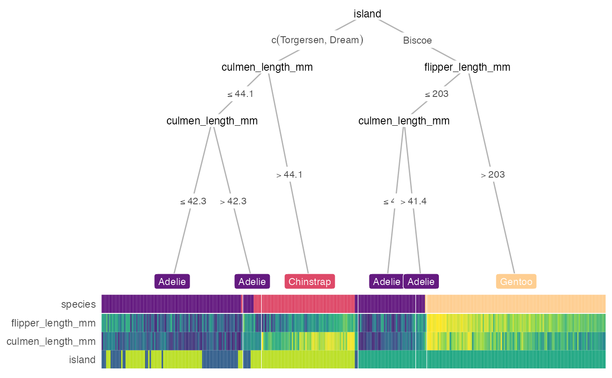

Draws and aligns decision tree and heatmap.
heat_tree.RdDraws and aligns decision tree and heatmap.
heat_tree( data, target_lab, data_test = NULL, custom_tree = NULL, task = c("classification", "regression"), target_cols = NULL, label_map = NULL, custom_layout = NULL, clust_samps = TRUE, clust_target = TRUE, show_all_feats = FALSE, p_thres = 0.05, lev_fac = 1.3, heat_rel_height = 0.2, tree_space_top = 0.05, tree_space_bottom = 0.05, par_node_vars = list(label.size = 0, label.padding = ggplot2::unit(0.15, "lines"), line_list = list(ggplot2::aes(label = splitvar)), line_gpar = list(list(size = 9)), ids = "inner"), terminal_vars = list(label.padding = ggplot2::unit(0.25, "lines"), size = 3, col = "white"), edge_vars = list(color = "grey70", size = 0.5), edge_text_vars = list(color = "grey30", size = 3, mapping = ggplot2::aes(label = paste(breaks_label, "*NA"))), print_eval = FALSE, x_eval = 0, y_eval = 0.9, my_metrics = NULL, feat_types = NULL, trans_type = c("normalize", "scale", "none"), cont_cols = ggplot2::scale_fill_viridis_c(), cate_cols = ggplot2::scale_fill_viridis_d(), clust_feats = TRUE, target_space = 0.05, panel_space = 0.001, target_pos = "top", target_lab_disp = target_lab, ... )
Arguments
| data | Tidy dataset. |
|---|---|
| target_lab | Name of the column in data that contains target/label information. |
| data_test | Tidy test dataset. If NULL, heatmap displays (training) `data`. |
| custom_tree | Custom tree with the partykit syntax. https://cran.r-project.org/web/packages/partykit/vignettes/partykit.pdf If NULL, a conditional inference tree is computed. |
| task | Character string indicating the type of problem, either 'classification' (categorical outcome) or 'regression' (continuous outcome). |
| target_cols | Function determine color scale for target, defaults to viridis option B. |
| label_map | Named vector of the meaning of the target values, e.g., c(`0` = 'Edible', `1` = 'Poisonous'). |
| custom_layout | Dataframe with 3 columns: id, x and y for manually input custom layout. |
| clust_samps | Logical. If TRUE, hierarhical clustering would be performed among samples within each leaf node. |
| clust_target | Logical. If TRUE, target/label is included in hierarchical clustering of samples within each leaf node and might yield a more interpretable heatmap. |
| show_all_feats | Logical. If TRUE, show all features regarless p_thres. |
| p_thres | Numeric value indicating the p-value threshold of feature importance. Feature with p-values computed from the decision tree below this value will be displayed on the heatmap. |
| lev_fac | Relative weight of child node positions according to their levels, commonly ranges from 1 to 1.5. 1 for parent node perfectly in the middle of child nodes. |
| heat_rel_height | Relative height of heatmap compared to whole figure (with tree). |
| tree_space_top | Numeric value to pass to expand for top margin of tree. |
| tree_space_bottom | Numeric value to pass to expand for bottom margin of tree. |
| par_node_vars | Named list containing arguments to be passed to the `geom_node_label()` call for non-terminal nodes. |
| terminal_vars | Named list containing arguments to be passed to the `geom_node_label()` call for terminal nodes. |
| edge_vars | Named list containing arguments to be passed to the `geom_edge()` call for tree edges. |
| edge_text_vars | Named list containing arguments to be passed to the `geom_edge_label()` call for tree edge annotations. |
| print_eval | Logical. If TRUE, print evaluation of the tree performance. |
| x_eval | Numeric value indicating x position to print performance statistics. |
| y_eval | Numeric value indicating y position to print performance statistics. |
| my_metrics | A set of metric functions to evaluate decision tree, defaults to common metrics for classification/regression problems. Can be defined with `yardstick::metric_set`. |
| feat_types | Named vector indicating the type of each features, e.g., c(sex = 'factor', age = 'numeric'). If feature types are not supplied, infer from column type. |
| trans_type | Character string of 'normalize', 'scale' or 'none'. If 'scale', subtract the mean and divide by the standard deviation. If 'normalize', i.e., max-min normalize, subtract the min and divide by the max. If 'none', no transformation is applied. More information on what transformation to choose can be acquired here: https://cran.rstudio.com/package=heatmaply/vignettes/heatmaply.html#data-transformation-scaling-normalize-and-percentize |
| cont_cols | Function determine color scale for continuous variable, defaults to viridis option D. |
| cate_cols | Function determine color scale for nominal categorical variable, defaults to viridis option D. |
| clust_feats | Logical. If TRUE, performs cluster on the features. |
| target_space | Numeric value indicating spacing between the target label and the rest of the features |
| panel_space | Spacing between facets relative to viewport, recommended to range from 0.001 to 0.01. |
| target_pos | Character string specifying the position of the target label on heatmap, can be 'top', 'bottom' or 'none'. |
| target_lab_disp | Character string for displaying the label of target label. If NULL, use `target_lab`. |
| ... | further arguments passed to `partkit::ctree()` |
Value
A gtable/grob object of the decision tree (top) and heatmap (bottom).
Examples
heat_tree(iris, 'Species')heat_tree( data = galaxy[1:100, ], target_lab = 'target', task = 'regression', terminal_vars = NULL, tree_space_bottom = 0)#> Warning: binary variable(s) 3 treated as interval scaled